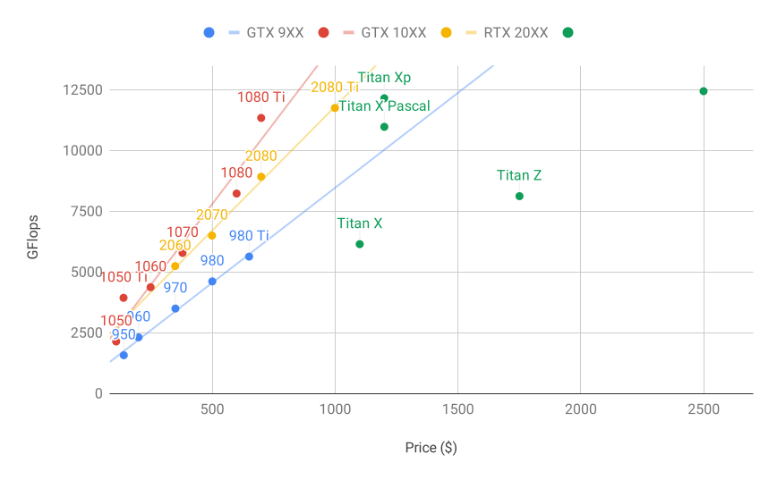
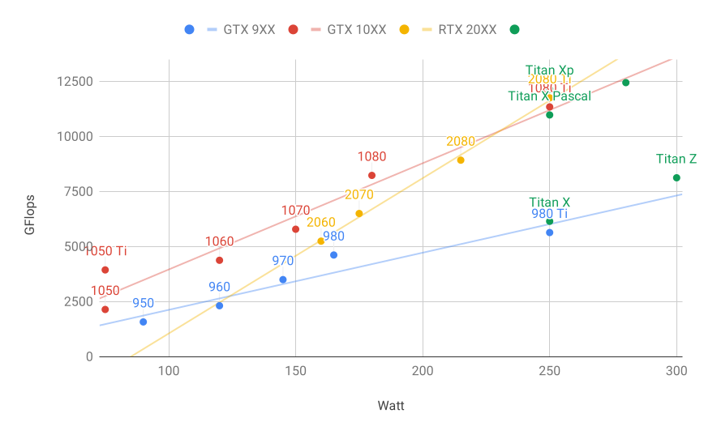

23.5. 选择服务器和GPU¶
深度学习训练通常需要大量计算。目前，GPU 是深度学习性价比最高的硬件加速器。具体来说，与 CPU 相比，GPU 更便宜且性能更高，往往高出一个数量级以上。此外，一台服务器可以支持多块 GPU，高端服务器最多可支持 8 块。更典型的数字是工程工作站最多 4 块 GPU，因为散热、制冷和供电需求会迅速超出办公楼所能支持的范围。对于更大规模的部署，云计算（例如亚马逊的 P3 和 G4 实例）是实用得多的方案。
23.5.1. 选择服务器¶
通常没有必要购买多线程的高端 CPU，因为大部分计算都发生在 GPU 上。话虽如此，由于 Python 中存在全局解释器锁（GIL），当我们有 4~8 块 GPU 时，CPU 的单线程性能可能就会有影响。在其他条件相同的情况下，这说明核心数较少但时钟频率较高的 CPU 可能是更经济的选择。例如，在 6 核 4 GHz 和 8 核 3.5 GHz 的 CPU 之间选择时，前者要好得多，尽管其总体速度较低。 一个重要考虑因素是 GPU 耗电量大，因此散热量也大。这要求非常好的散热，以及足够大的机箱来容纳 GPU。如果可能的话，请遵循以下准则：
电源。GPU 耗电量很大。预算按每块设备最高 350W 计算（请检查显卡的峰值需求而不是典型需求，因为高效的代码可能会消耗大量能量）。如果电源功率不足以满足需求，你就会发现系统变得不稳定。
机箱尺寸。GPU 体积大，辅助电源接口往往需要额外的空间。此外，大机箱更容易散热。
GPU 散热。如果你有大量 GPU，可能需要考虑水冷。此外，应选择公版设计，即使风扇较少也无妨，因为公版足够薄，可以在设备之间留出进风空间。如果你购买多风扇 GPU，安装多块 GPU 时它可能太厚而无法获得足够的空气，从而导致过热降频。
PCIe 插槽。将数据移入和移出 GPU（以及在 GPU 之间交换数据）需要大量带宽。我们推荐具有 16 条通道的 PCIe 3.0 插槽。如果你安装多块 GPU，请务必仔细阅读主板说明，确保同时使用多块 GPU 时仍能提供 16\(\times\) 带宽，并确保额外插槽提供的是 PCIe 3.0 而不是 PCIe 2.0。有些主板在安装多块 GPU 后会降级到 8\(\times\) 甚至 4\(\times\) 带宽。这在一定程度上是由于 CPU 提供的 PCIe 通道数量有限。
简而言之，以下是搭建深度学习服务器的一些建议：
入门级。购买一块低功耗的低端 GPU（适合深度学习的廉价游戏 GPU 功耗为 150~200W）。如果运气好，你当前的计算机就能支持它。
1 块 GPU。4 核低端 CPU 就足够了，大多数主板也能满足要求。目标至少 32 GB DRAM，并投资一块 SSD 用于本地数据访问。600W 的电源应该足够。购买风扇较多的 GPU。
2 块 GPU。4~6 核的低端 CPU 就足够了。目标 64 GB DRAM，并投资一块 SSD。两块高端 GPU 需要 1000W 左右的电源。就主板而言，请确保它有两个 PCIe 3.0 x16 插槽。如果可能，请选择在两个 PCIe 3.0 x16 插槽之间留有两个空位（间距 60mm）的主板，以便增加进风。在这种情况下，请购买两块风扇较多的 GPU。
4 块 GPU。请确保购买单线程速度相对较快的 CPU（即高时钟频率）。你可能需要一个具有较多 PCIe 通道的 CPU，例如 AMD Threadripper。你很可能需要相对昂贵的主板才能获得 4 个 PCIe 3.0 x16 插槽，因为它们可能需要 PLX 芯片来复用 PCIe 通道。购买采用公版设计、较窄且能让空气在 GPU 之间流通的 GPU。你需要 1600~2000W 的电源，而你办公室的插座可能不支持。这台服务器运行时可能又吵又热。你不会想把它放在桌子下面。建议配备 128 GB DRAM。准备一块 SSD（1~2 TB NVMe）用于本地存储，并配一组以 RAID 配置的硬盘来存储数据。
8 块 GPU。你需要购买专用的多 GPU 服务器机箱，配备多个冗余电源（例如 2+1 冗余，每个电源 1600W）。这需要双路服务器 CPU、256 GB ECC DRAM、一块快速网卡（推荐 10 GBE），你还需要检查服务器是否支持 GPU 的物理外形尺寸。消费级 GPU 与服务器 GPU（例如 RTX 2080 与 Tesla V100）的风道和布线位置差异很大。这意味着你可能无法把消费级 GPU 安装到服务器中，因为电源线的间隙不足，或者缺少合适的线束（这是本书一位合著者的痛苦经历）。
23.5.2. 选择GPU¶
目前，AMD 和 NVIDIA 是独立 GPU 的两大主要制造商。NVIDIA 最早进入深度学习领域，并通过 CUDA 为深度学习框架提供更好的支持。因此，大多数购买者选择 NVIDIA GPU。
NVIDIA 提供两类 GPU，分别面向个人用户（例如 GTX 和 RTX 系列）和企业用户（通过 Tesla 系列）。这两类 GPU 的计算能力相当。不过，企业级 GPU 通常采用（被动式）强制风冷、更大的显存以及 ECC（纠错）内存。这些 GPU 更适合数据中心，价格通常比消费级 GPU 贵十倍。
如果你是拥有 100 台以上服务器的大公司，应当考虑 NVIDIA Tesla 系列，或者改用云端的 GPU 服务器。对于拥有 10 台以上服务器的实验室或中小型公司，NVIDIA RTX 系列可能是最具成本效益的。你可以购买采用 Supermicro 或 Asus 机箱的预配置服务器，这类机箱能高效容纳 4~8 块 GPU。
GPU 厂商通常每一到两年发布一代新产品，例如 2017 年发布的 GTX 1000（Pascal）系列和 2019 年发布的 RTX 2000（Turing）系列。每个系列都提供多种不同型号，性能水平各不相同。GPU 性能主要取决于以下三个参数的组合：
计算能力。我们通常关注 32 位浮点计算能力。16 位浮点训练（FP16）也正在进入主流。如果你只关心预测，也可以使用 8 位整数。最新一代 Turing GPU 提供 4 位加速。遗憾的是，在本书撰写时，用于训练低精度网络的算法尚未普及。
显存大小。随着模型变大或训练时使用的批量变大，你将需要更多 GPU 显存。注意区分 HBM2（高带宽内存）和 GDDR6（图形 DDR）显存。HBM2 更快，但也贵得多。
显存带宽。只有拥有足够的显存带宽，你才能充分发挥计算能力。如果使用 GDDR6，请留意较宽的内存总线。
对大多数用户来说，看计算能力就足够了。请注意，许多 GPU 提供不同类型的加速。例如，NVIDIA 的 TensorCore（张量核心）能将一部分运算符加速 5\(\times\)。请确保你的库支持这种加速。GPU 显存不应少于 4 GB（8 GB 要好得多）。尽量避免让 GPU 同时用于显示图形用户界面（改用集成显卡）。如果无法避免，请额外增加 2 GB 内存以确保安全。
图23.5.1 比较了各种 GTX 900、GTX 1000 和 RTX 2000 系列型号的 32 位浮点计算能力和价格。图中给出的价格是撰写本书时维基百科上的价格。

图23.5.1 浮点计算能力与价格的比较。¶
我们可以从中看到几点：
在每个系列内部，价格和性能大致成正比。Titan 型号因提供更大的 GPU 显存而有显著的溢价。不过，较新的型号具有更好的成本效益，比较 980 Ti 和 1080 Ti 即可看出这一点。RTX 2000 系列的价格似乎没有改善多少。然而，这是因为它们提供了远为优越的低精度性能（FP16、INT8 和 INT4）。
GTX 1000 系列的性价比大约是 900 系列的两倍。
对于 RTX 2000 系列，性能（以 GFLOPs 计）是价格的仿射函数。

图23.5.2 浮点计算能力与能耗。¶
图23.5.2 表明，能耗大多随计算量的增加而线性增长。其次，较晚的几代产品能效更高。这似乎与 RTX 2000 系列对应的图相矛盾。不过，这是 TensorCore 功耗高得不成比例所导致的。
23.5.3. 小结¶
搭建服务器时，要注意电源、PCIe 总线通道、CPU 单线程速度和散热。
如果可能，应当购买最新一代的 GPU。
大规模部署应使用云端。
高密度服务器可能无法兼容所有 GPU。购买前请检查机械和散热规格。
为了获得高效率，请使用 FP16 或更低精度。